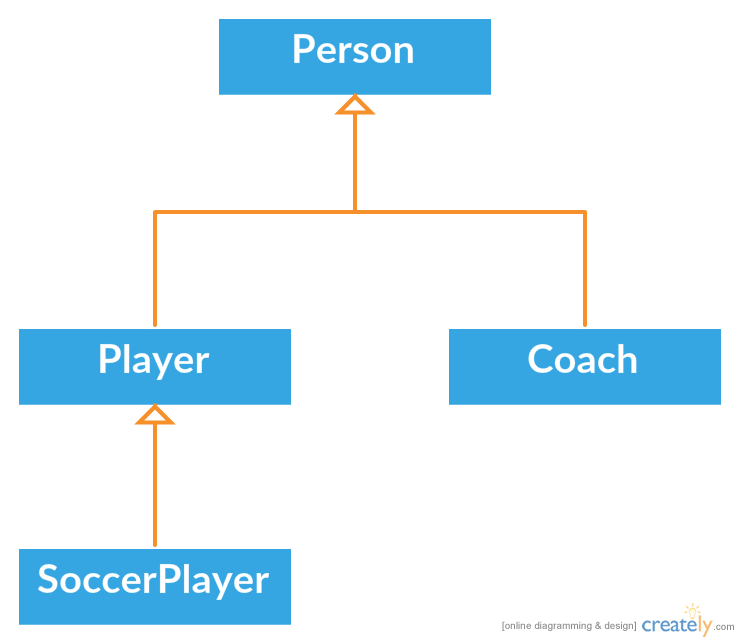

Object-Oriented Programming
Inheritance
In object-oriented programming, inheritance is the concept that one object can inherit attributes and behaviours (variables and methods) of their parent classes. In the below example, Player would be the parent class of SoccerPlayer, and Person would be the parent of both Player and Coach. In this case, Player and Coach are referred to as subclasses of Person, and Person is referred to as the superclass of Player and Coach. Subclasses and superclasses are looked at as having an "is a" relationship. For example, a SoccerPlayer is a Player, and a Player is a Person. The extends keyword is used to denote the superclass of some other class in Java. Below is the example code to implement the Player-Person section of the diagram in Java.
By extending the Person class, the Player class automaticaly inherits public fields like name, but it is not able to directly access the age variable as it is private. It is a similar story with methods, though there are no private methods in this example. Another important keyword in Java inheritance is super. Super is used to access superclass methods within the subclass. Using the super keyword by itself followed with brackets () containing any needed parameters, runs the superclass constructor. If used, this must be the very first line in the subclass constuctor. Super can also be used followed by a dot . and then a public superclass method to execute that method in case you override the method in the subclass by using the same name and parameters.
Encapsulation
Encapsulation is a fundamental principle of object oriented programming which treats each class as a self-contained capsule of sorts, where its variables (properties) are hidden from direct access, commonly referred to as data hiding. Instead, variables are read with accessor or getter methods, and modified with mutator or setter methods. Some variables may only have accessor methods, if the programmer does not wish for the variable to be modified. Below is an example of how you would code a bank account class using encapsulation.
Abstraction
Abstract classes are made for Objects representing abstract concepts. These methods do not have any implementation, only the method header containing the abstract keyword. Any class with an abstract method contained wihtin it must be declared abstract as well, which also means that the class is not able to be instantiated. The abstract methods within them must be implemented by subclasses of the abstract class, which are able to be instantiated. An abstract class can be extended just like any other class with the extends keyword. Below is an example of an abstract class.
An interface is like an abstract class, except all methods within it is abstract by default, so there is no need to put the abstract keyword in contained method headers. A class can be declared an interface with the interface keyword, and a class can implement the interface with the implements keyword.
You would define a class as an interface when you wish for it to act as a sort of contract, which all methods that implement it must follow. This means that all the methods within it are abstract and public. The class also cannot have any instance variables, but may contain constants. Interfaces are often used to create a property that comes along with certain behaviors, or methods. It is important to note that in Java, a class can only extend a single class, whilst is it able implement multiple. This is why most interfaced are abilities ending with "able", such as "clickable" or "movable". An interface can also extend other interfaces to make an interface hierarchy but this is uncommon. Below is an example of a Java interface.